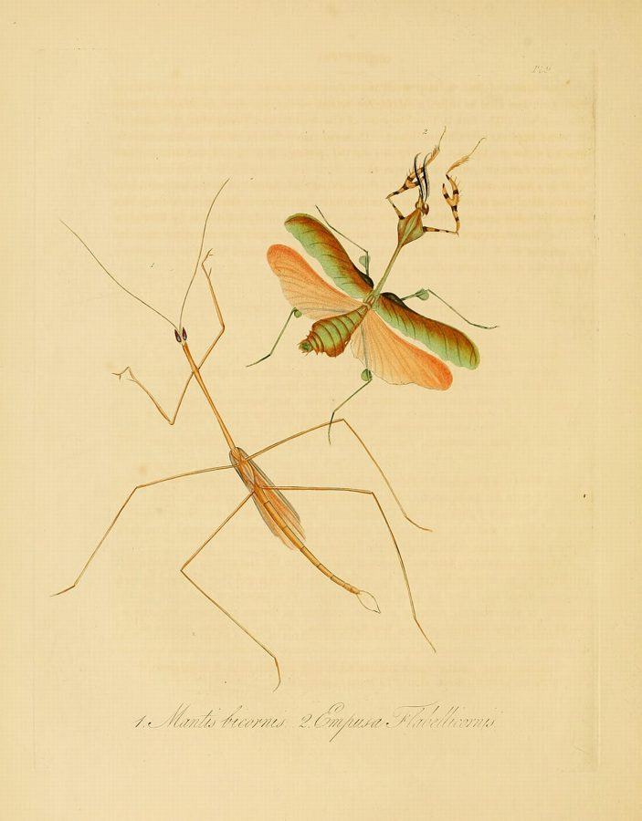

स्टिक मैंटिसStick Mantis
Schizocephala bicornis · Mantidae · INS-0181

- Scientific name वैज्ञानिक नाम
- Schizocephala bicornis (Fabricius, 1803)
- Family कुल
- Mantidae
- Hindi हिंदी
- स्टिक मैंटिस
- Local names स्थानीय नाम
- stick mantis, mantis
- Status here यहाँ की स्थिति
- native
- Movement आवागमन
- Resident, here all year
- Known from कहाँ दर्ज
- Others have published records from the wider Awadh–Purvanchal plain, none yet from Basti–Ayodhya अवध–पूर्वांचल से दूसरों के प्रकाशित अभिलेख, बस्ती–अयोध्या से अभी नहीं
- IUCN IUCN
- not evaluated
- Review समीक्षा
- audited and independently read
When to look कब देखें
Present all year. साल भर मौजूद।
स्टिक मैंटिस / Stick Mantis
Schizocephala bicornis (Fabricius, 1803) — Mantidae
स्टिक मैंटिस — सूखी घास में छिपा हुआ एक बहुत ही पतला-दुबला शिकारी कीट। इसका शरीर घास की सूखी डंडी जैसा लगता है, इसलिए इसे "स्टिक मैंटिस" कहते हैं। सामने की दोनों टाँगें बिल्कुल मुड़ी हुई होती हैं, जैसे प्रार्थना कर रहे हों। जब कोई छोटा कीट पास आता है, तो यह बिजली की तरह तेज़ी से अपनी टाँगें खोल देता है और शिकार को पकड़ लेता है।
Quick Identification त्वरित पहचान
| Feature | Description |
|---|---|
| Size | Small to medium mantis, 32–40 mm long |
| Body shape | Extremely slender and elongate, like a dried twig or stick |
| Colour | Brown, greyish-brown, or pale tan; matches dry grass and twigs |
| Head | Small, triangular; with a distinctive bicornate crest or crown |
| Raptorial legs | Front pair highly modified for grasping; folded in "praying" posture |
| Antennae | Long and filiform |
| Wings | Short and vestigial or reduced; flightless or very limited flight |
| Posture | Remains immobile on grass stems; cryptic stance |
Field tip: In dry grasslands during the pre-monsoon and dry seasons, search low grass clumps. Look for the thin, stick-like brown shape that doesn't sway with the grass. The bicornate head (two small horn-like projections) is diagnostic. When disturbed, it may sway like a twig or display its folded front legs in a threat posture.
हिंदी — कैसे पहचानें: सूखी घास जैसा बिल्कुल पतला कीट। सिर पर दो छोटे सींग जैसे उभार। सामने की दोनों टाँगें ज़ोर से मुड़ी होती हैं, प्रार्थना करते आदमी की तरह।
Morphology आकारिकी
Biometrics:
| Measurement | Range |
|---|---|
| Body length | 32–40 mm |
| Head width | 3–4 mm |
| Front leg length (tibia + femur) | 12–16 mm |
| Antennae | 25–35 mm |
| Pronotum length | 8–10 mm |
Colour: Uniformly greyish-brown, tan, or pale brown, matching dead grass and dried vegetation. Slight variations in tone help individual camouflage on their specific substrate.
Head: Small, triangular. Two small horn-like or crest-like projections on the vertex (the bicornate feature; gives the species its Latin name bicornis). Large compound eyes positioned anterolaterally. Mouth directed downward and forward.
Body: Extremely slender and linear, like a dried grass stem or small twig. Pronotum very elongated and narrow. Legs placed well back on the body (typical of Mantidae). Mid and hind legs long and slender, used for bracing and movement.
Raptorial front legs (forelimbs): Highly modified for grasping prey. Coxa and trochanter form a ball-and-socket joint with the thorax, permitting wide range of movement. Femur and tibia lined with spines and rows of small teeth for gripping prey. Usually held in the characteristic "praying" or folded posture against the body.
Wings: Highly reduced — either vestigial (lacking functional wings) or present as very short, non-functional wing buds. This species is flightless or nearly so.
Abdomen: Slender, 7-segmented in female; slightly modified in male.
हिंदी: बहुत पतला-दुबला कीट, सूखी डंडी जैसा दिखता है। सिर पर छोटे सींग। सामने की दोनों टाँगें कंटीली और मुड़ी हुई।
Behaviour & Ecology व्यवहार और पारिस्थितिकी
The Stick Mantis is a cryptic, sedentary predator that hunts by ambush in dry grasslands and scrubland. Its extremely slender body and stick-like appearance provide excellent camouflage on dead grass and twigs. The insect remains immobile for long periods, waiting for small insects to come within striking range.
Hunting behaviour: The mantis clasps its front legs in a "praying" posture against its body, concealing them. When a small insect approaches (flies, small grasshoppers, or other arthropods), the mantis strikes with lightning speed, extending its forelimbs to snare the prey. The prey is then held firmly by the spiny raptorial legs and brought to the mouth.
Camouflage and mimicry: The resemblance to a dried grass stem is precise — the narrow body, the coloration, and the posture all blend seamlessly with dead vegetation. This cryptic appearance protects it from predators and allows it to approach prey closely without alarming them.
Habitat preference: Occurs in dry grasslands, particularly during the dry and pre-monsoon seasons when grass becomes sparse and desiccated. Prefers areas with scattered dry grass clumps and low herbaceous cover.
Gregariousness: Solitary; no aggregations known.
Thermoregulation: Like all insects, body temperature is dependent on ambient conditions and behavioural thermoregulation through basking and movement.
हिंदी: अकेला रहने वाला शिकारी कीट। सूखी घास में छिपा रहता है। जब छोटा कीट पास आए तो बिजली की तरह अपनी टाँगें खोल देता है।
Life Cycle / Phenology जीवन चक्र
| Stage | Duration | Notes |
|---|---|---|
| Egg in ootheca | 2–4 weeks | Laid in dry grass or on twigs; overwinter dormancy possible |
| Nymph (multiple instars, usually 6–7) | 2–3 months total | Progressive growth through instars; cryptic throughout |
| Adult | 2–4 months | Emergence in dry season and pre-monsoon |
| Reproductive season | March–August (eastern UP) | Mating and egg-laying; peak activity May–June |
Seasonal pattern in eastern UP: Year-round presence in suitable habitat, but peak abundance in dry season (February–May) and pre-monsoon (April–June). Presence in monsoon and post-monsoon depends on local vegetation and moisture.
हिंदी: साल भर रह सकता है सूखी जगह पर। अंडे घास पर देते हैं। गर्मी में सब से ज़्यादा दिखता है।
Host Plants or Prey आहार
Insect prey (captured by ambush):
- Small flies and midges
- Small grasshoppers and crickets (younger instars)
- Small moths and butterflies
- Ants
- Other small arthropods
The mantis does not feed on plants; it is a strict predator. Host plants are not relevant; instead, it inhabits vegetation where small prey arthropods are abundant.
हिंदी: छोटे कीट खाता है — मक्खी, टिड्डे, पतंगे। सब्जियाँ नहीं खाता, सिर्फ कीट।
Predators / Natural Enemies शत्रु
- Spiders: Large hunting spiders and web-building spiders that capture mantises
- Wasps: Parasitoid wasps (family Evaniidae) lay eggs in mantis oothecae
- Birds: Small birds, particularly in open grasslands, may capture and consume mantises
- Lizards: Skinks and other ground-dwelling lizards may prey on young mantises
- Ants: Aggressive ant colonies may overwhelm isolated individuals
हिंदी: बड़े मकड़े, चिड़ियाँ, और ततैया इसका शिकार करते हैं।
Agricultural / Human Relevance कृषि प्रासंगिकता
Beneficial insect: The Stick Mantis is a valuable predator of crop pests, particularly small insects like flies, leafhoppers, and young grasshoppers. In grasslands adjacent to agricultural fields, it may help control pest populations naturally.
No documented harmful impacts: This species does not feed on crops or stored products and poses no agricultural threat.
Cultural significance: Mantises have long held a place in human cultures across Asia. In Hindi folk tradition, the mantis's "praying" posture has been noticed and remarked upon. No specific ceremonies or uses are documented for this species in the region.
Research value: Mantis behaviour, particularly predatory strike mechanics and camouflage effectiveness, is of interest to biomechanics and sensory ecology researchers. The cryptic lifestyle and cryptic appearance make it a subject for studies on visual camouflage and predator-prey interactions.
हिंदी: यह कीट खेतों के कीटों को खाता है, इसलिए फ़ायदेमंद है। इसका कोई नुक़सान नहीं होता।
Expected Locally स्थानीय रूप से अपेक्षित
Not a field record. Written from published accounts for eastern Uttar Pradesh. No confirmed local sighting yet — if you have seen it, that is what the atlas needs.
अभी तक स्थानीय पुष्टि नहीं। यह विवरण प्रकाशित स्रोतों से है, किसी अवलोकन से नहीं।
Expected in dry grasslands and scrubland throughout eastern Uttar Pradesh, particularly in the dry season (January–June) and pre-monsoon (April–June). The species prefers areas with sparse, desiccated grass and low herbaceous cover. In Basti district, suitable habitat includes fallows, pastures, and the edges of irrigated fields during the dry season.
A photograph of the insect on dried grass with date and location would confirm a local record.
Distribution वितरण
Global range: Indian subcontinent; endemic to South and Southeast Asia. Occurs across India from the Himalayan foothills to southern peninsular India, in dry and semi-arid regions.
In India: Widespread in grasslands and scrubland of central, eastern, and northern India. More abundant in semi-arid regions; less common in high-rainfall areas.
In Uttar Pradesh: Recorded in grasslands and scrubland, particularly in the drier districts. Likely throughout the state in suitable habitat.
In Basti district / eastern UP: Expected in dry grasslands, fallows, and pastures during the dry and pre-monsoon seasons; frequency depends on local rainfall and vegetation condition.
Research Questions शोध प्रश्न
- What is the microhabitat preference of Stick Mantis within grassland communities — does it prefer particular grass species or particular grass structural types?
- क्या स्टिक मैंटिस की शिकारी रफ़्तार अलग अलग तापमान पर अलग अलग होती है?
- What is the prey size range of different nymphal instars, and how does this relate to development time?
- Do different colour morphs of Stick Mantis show preference for matching vegetation types (brown grass vs. grey twigs)?
- How effective is the cryptic camouflage — what proportion of predators detect and attack a mantis relative to other grassland insects of similar size?
- क्या खेतों के किनारे की घास में स्टिक मैंटिस कीट नियंत्रण में मददगार साबित होता है?
Similar Species मिलती-जुलती प्रजातियाँ
| Species | Key Difference | Hindi |
|---|---|---|
| Brown Mantis (Mantis religiosa) | Larger (50–75 mm); more robust; brown to green colour; no bicornate head crest | बड़ी पतंग, मोटी |
| Creobroter mantises (Creobroter spp.) | Smaller, more compact; colourful (with eye-spots on wings); different head shape | रंगीन पतंग, मोटी |
| Dried grass (inanimate) | Not an insect; obviously lacks eyes, legs, and body segmentation when examined closely | सूखी घास, कीट नहीं |
Field rule: A thin, stick-like insect with a small triangular head bearing two small horn-like crests, folded front legs held in "prayer" position, and a cryptic brown or tan colour on dried grass in dry habitats — this is the Stick Mantis. Larger, more robust mantises with different head shapes belong to other species.
Taxonomy & Classification वर्गीकरण
Original description. The species was described by Fabricius in 1803 in the work Antliatae as Mantis bicornis. Type locality is India (not further specified in original description).
Subspecies. No subspecies are currently recognised; the species is treated as monotypic across its range.
Family and order placement. Order Mantodea (mantises); family Mantidae. Schizocephala is a genus of small, cryptic mantises found primarily in South and Southeast Asia.
Phylogenetic notes. Within Mantidae, Schizocephala is placed in the subfamily Mantinae. The stick-like body form and cryptic behaviour appear to be adaptations to grassland habitats and evolved convergently with other cryptic grassland insects.
IUCN status rationale. Not evaluated. The species is widespread and abundant in suitable habitats; no conservation assessment has been undertaken.
हिंदी: पुरी दुनिया में इस जाति की बहुत सारी पतंगें हैं। यह जाति भारत में ही रहती है।
Photo Gallery फोटो गैलरी
No photos yet — add field photos to media/species/stick_mantis/ and run node scripts/sync_photos.js.
Wanted photos:
- Individual on dried grass showing cryptic posture
- Close-up of head showing bicornate crest
- Raptorial front legs extended in striking position
- Nymph on vegetation
References संदर्भ
- Fabricius, J.C. (1803). Antliatae. Pars posterior. Systema Antliatorum. Brunsvigae. [original description as Mantis bicornis]
- Ehrmann, R. (2002). Mantodea of the World. An annotated list of the known mantises. Natural History Museum, Nikolaigasse 8-10, Vienna.
- Ehrmann, R., Lombardi, A. & Olivetti, I. (2005). Mantises of the Old World (Insecta: Mantodea). An annotated catalogue. Arthropoda Supplement 2: 1–99.
- GBIF Occurrence Data — Schizocephala bicornis, India.
- Richards, O. W. & Davies, R. G. (1977). Imms' General Textbook of Entomology. 10th ed. Chapman & Hall, London.
- GBIF Secretariat. Schizocephala bicornis. GBIF Backbone Taxonomy. https://www.gbif.org/
Source file: species/fauna/insects/stick_mantis.md